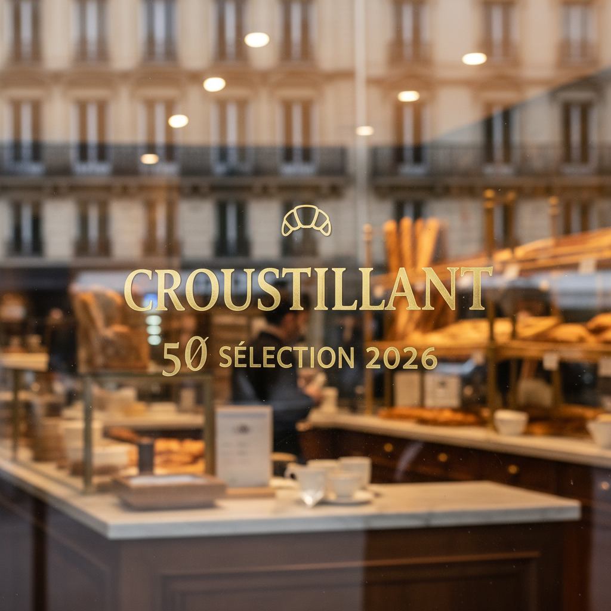
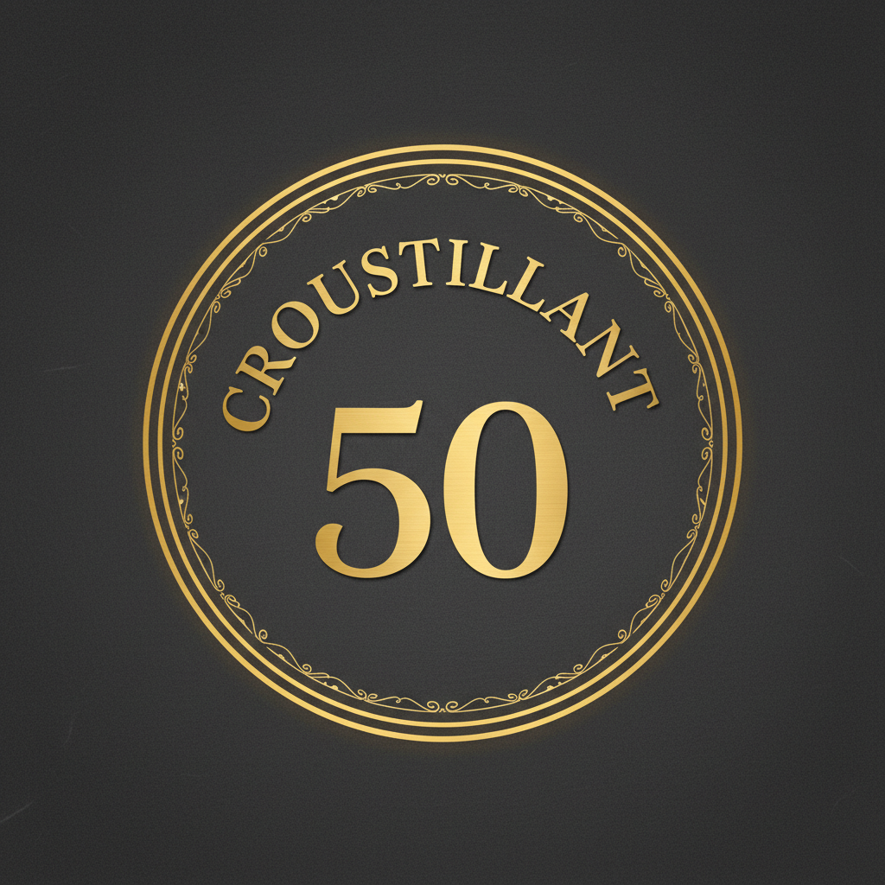
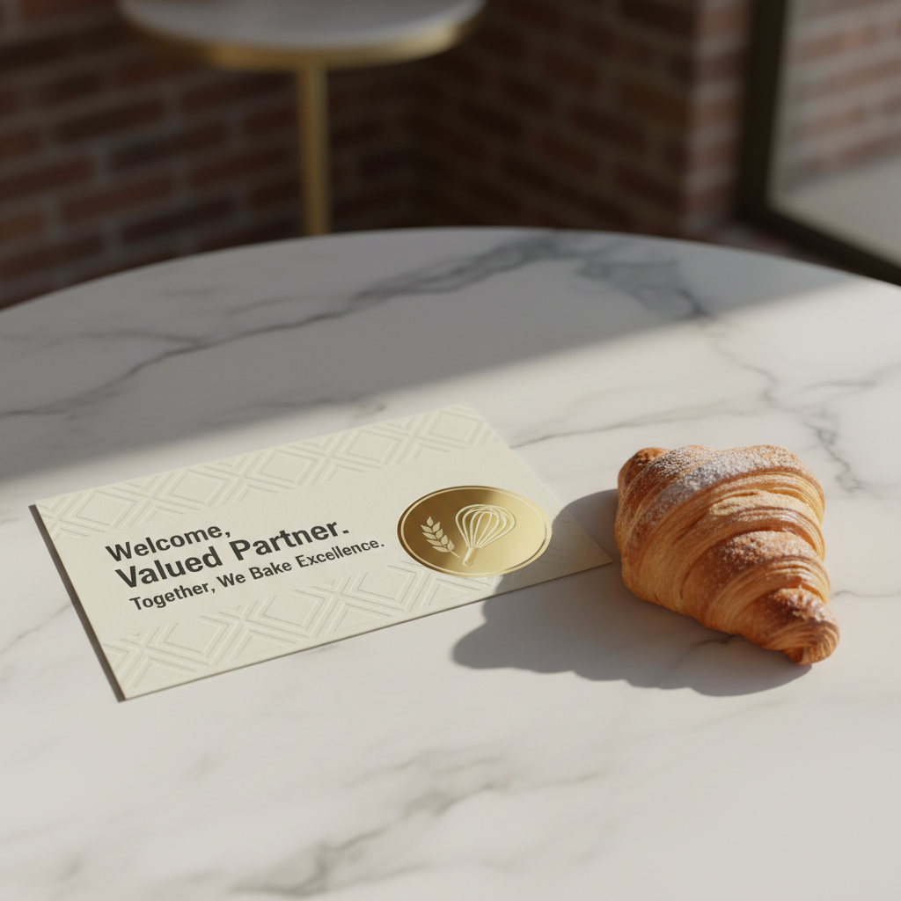

01. Macaron de Vitrine Physique
Le macaron "Croustillant 50" est une distinction physique accordée uniquement aux 50 meilleures adresses de Paris. Conçu avec une finition or métallique mat, il signale aux passants que cet établissement appartient à l'élite du croissant parisien.
Spécifications :
- Diamètre : 120mm
- Finition : Vinyle Or Mat, Lettrage Charbon
- Application : Vitrine extérieure (double face)


02. Badge Digital Certifié
Optimisé pour Instagram et les sites web partenaires, ce badge permet aux artisans de partager leur succès avec leur communauté. Il renforce la preuve sociale et attire les foodies technophiles à la recherche du "Hot Batch".
Usages recommandés :
- Story Highlight "Awards"
- Profil Instagram (Link-in-bio)
- Footer du site web officiel de la boulangerie
Le Pack Bienvenue "Founder's Choice"

Chaque partenaire reçoit un coffret contenant le macaron, une carte de bienvenue numérotée et un guide d'utilisation de l'interface "Artisan Dashboard".